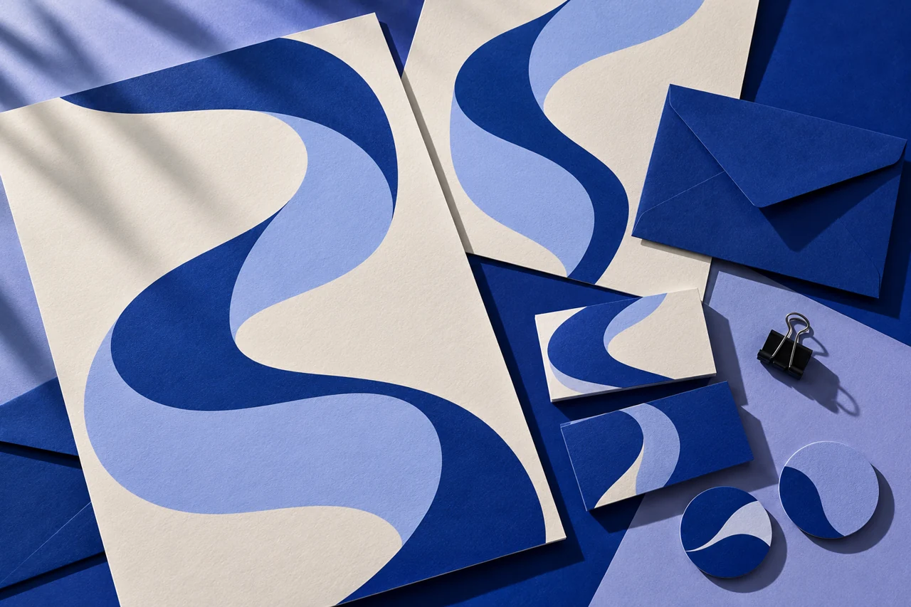
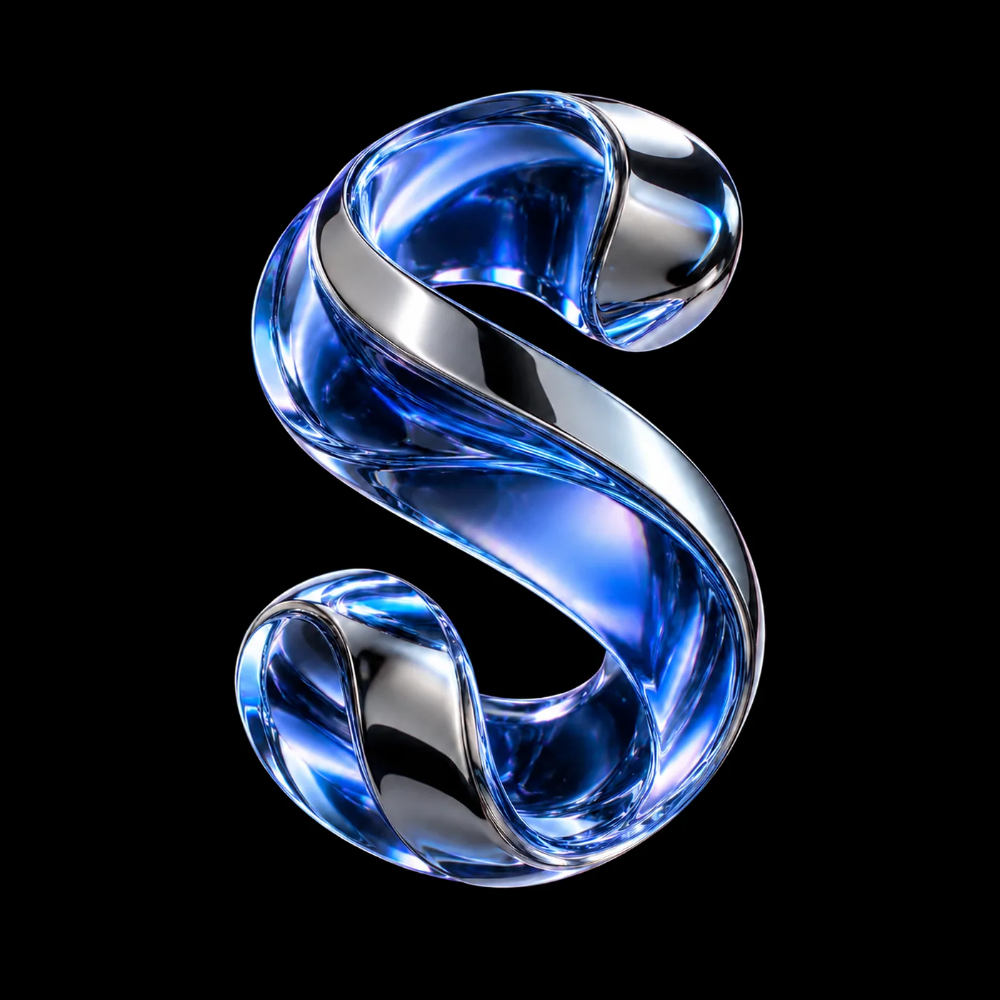
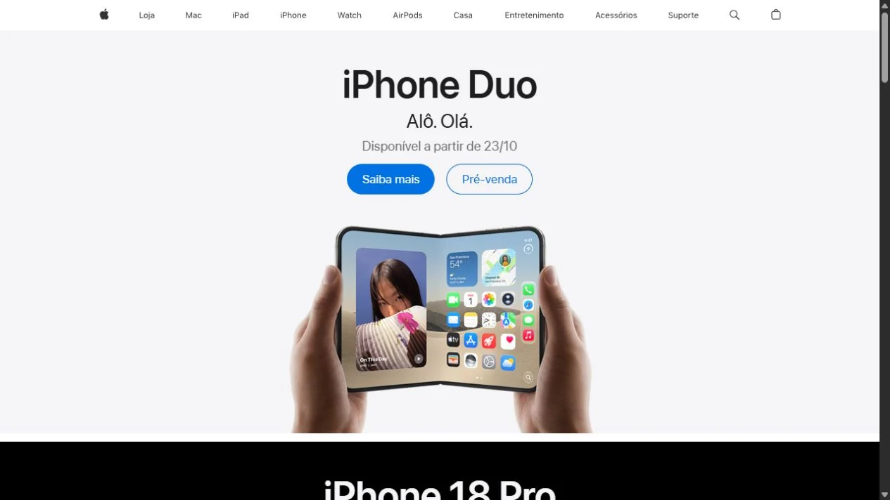
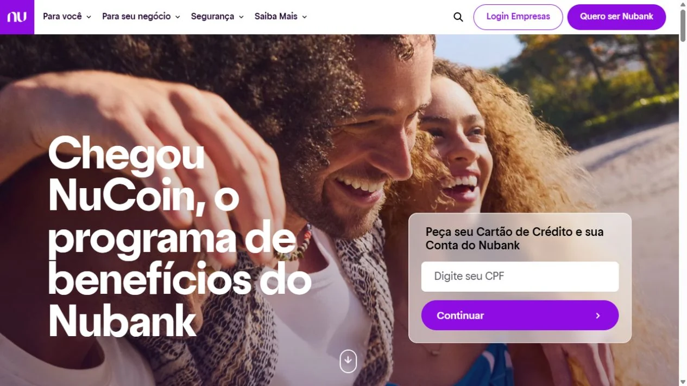
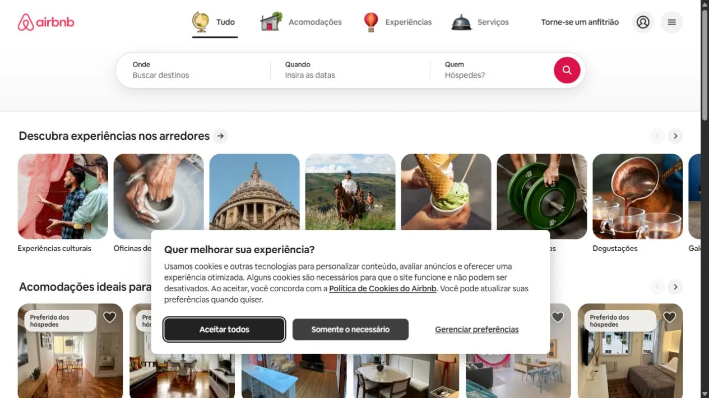

Aline Santos
Advocacia.
Uma apresentação que aproxima. Identidade delicada, áreas de atuação organizadas e um caminho direto para a primeira conversa.
Conhecer o projeto ↗DESIGN. TECNOLOGIA. POSSIBILIDADES.
Sites, marcas e tecnologia sob medida para empresas de todo o Brasil. Criamos também sistemas, plataformas, automações e soluções com IA.
01 / O QUE A GENTE FAZ
Uma marca reconhecível. Um site que faz sentido.
E tecnologia para conectar tudo isso.

Uma descrição que responde à busca, conteúdo útil e uma estrutura preparada para ser encontrada.
ALÉM DA PRESENÇA DIGITAL
Design e tecnologia para apresentar a empresa e ajudar a operação a funcionar melhor.
O JEITO STARTZY
Para ser lembrado pela experiência.
Reconhecido pelo cuidado. Escolhido pelo que faz sentido.
02 / TRABALHOS SELECIONADOS
Negócios diferentes. Universos próprios.
Conheça alguns sites criados pela Startzy.
Uma apresentação que aproxima. Identidade delicada, áreas de atuação organizadas e um caminho direto para a primeira conversa.
Conhecer o projeto ↗
Conexão com a vida real. Uma experiência visual vibrante que aproxima os planos, os serviços e as pessoas que usam a internet todos os dias.
Conhecer o projeto ↗
O cuidado começa na primeira impressão. Uma presença elegante para apresentar a profissional, os tratamentos e a experiência do atendimento.
Conhecer o projeto ↗O próximo capítulo pode ser o da sua empresa.
Ver todos os projetos03 / DO PRIMEIRO OI AO SITE NO AR
Você participa. A gente orienta.
Cada etapa tem um motivo e um próximo passo.
Ouvimos sua história, entendemos o momento da empresa e o que você quer alcançar.
Ponto de partidaDefinimos a estrutura, o conteúdo e a linguagem visual que vão guiar o projeto.
Estratégia e planejamentoDesign e desenvolvimento ganham forma, com espaço para sua participação e ajustes.
Ideias em movimentoRevisamos juntos, preparamos a publicação e orientamos os próximos passos.
Um novo capítulo04 / JUNTO COM O SEU SITE
Hospedagem, segurança e ajustes: a parte técnica que costuma dar dor de cabeça já está no pacote.
Seu site já entra no ar hospedado. Já tem a sua? Publicamos lá sem problema.
Cadeado em todas as páginas.

criando sites, marcas e estratégias.
Vamos conversarTroca de imagem, texto e cor sempre que precisar, com a mensalidade.

05 / DEPOIS DA ENTREGA
Depois que o site vai ao ar, a Startzy continua cuidando dele para você.
A mensalidade não é obrigatória. Você decide depois da entrega.
Quero saber da mensalidadeTranquilidade
depois do lançamento.
06 / QUEM ESTÁ POR TRÁS
Sou desenvolvedor e designer há 10 anos. Aprendi na prática que a forma como uma empresa se apresenta muda a maneira como ela é percebida.
Uma boa imagem abre portas. Ajuda a conquistar visibilidade, criar conexões e gerar novas oportunidades. E uma marca marcante faz o cliente lembrar de você pela experiência, pelo cuidado e pelo valor que entrega.
É com essa visão que eu e minha equipe criamos a Startzy: para transformar ideias em uma presença que faça sentido para o seu negócio.
07 / CONVERSAS QUE CONTINUAM
O trabalho ganha sentido na experiência
de quem está do outro lado.
Agora a nossa presença digital acompanha o cuidado que sempre tivemos com cada doce que sai do ateliê.
Conseguimos acompanhar cada etapa, entender as escolhas e ver o site da empresa ganhar forma.
O resultado tem a nossa cara. Cada detalhe conta quem somos e o que queremos construir no estúdio.
08 / UMA PARCERIA SEM FRONTEIRAS
Nossa origem é Mauá. Nossa forma de trabalhar aproxima empresas de qualquer lugar do Brasil: conversa online, direção compartilhada e cada etapa acompanhada.
Vamos conversarDa primeira ideia
ao próximo capítulo.
UM OLHAR PARA BOAS EXPERIÊNCIAS
Uma seleção editorial de sites de grandes marcas para inspirar a conversa sobre o seu projeto.

AppleHierarquia e foco↗
NubankIdentidade e próximo passo↗
AirbnbNavegação que orienta↗Referências de mercado. Os trabalhos da Startzy estão no nosso portfólio.
09 / SEM PONTAS SOLTAS
Uma boa parceria começa com expectativas claras. Se sua dúvida não está aqui, é só chamar.
Tire sua dúvida com a gente ↗Não. Conte o que você tem em mente e envie os materiais que já possui. A gente ajuda a organizar informações, conteúdo e referências para definir o melhor ponto de partida.
Podemos criar o site e a identidade visual, além de landing pages, SEO, sistemas, plataformas, automações e IA. A proposta define as entregas de acordo com a necessidade da sua empresa.
O orçamento depende do escopo, da quantidade de páginas e das funcionalidades. Depois da primeira conversa, apresentamos a proposta com entregas, etapas e valores. Há pagamento por Pix ou cartão em até 12 vezes, conforme as condições da proposta.
Sites e landing pages podem ser entregues a partir de 3 dias após o envio completo do material. O prazo final depende do escopo, das funcionalidades e das aprovações, e é combinado na proposta. Sistemas, plataformas e integrações têm cronograma definido conforme a complexidade.
Não. A continuidade é opcional. O plano de manutenção pode incluir hospedagem, backup e ajustes pontuais, conforme o combinado. O domínio próprio é de responsabilidade do cliente; se você já tem hospedagem, avaliamos a publicação nela.
Sim. Somos de Mauá, SP, e atendemos empresas de todo o Brasil. Conversas, apresentações e aprovações podem ser feitas online, com as etapas do projeto combinadas com você.
SUA PRÓXIMA IDEIA COMEÇA AQUI
Conta a sua ideia. A gente começa pela conversa.
Chamar no WhatsApp agenciastartzy@gmail.comMauá, SP · Atendimento online em todo o Brasil